Vaklaf vstane v deset. To není ráno. To je polední pauza někoho, kdo si lavičku na letišti splnil v sobotu v noci a doufá, že tahle peřina o tom ví. Žádný budík. Sklo nad hlavou. Ohořelá bouda nemá s časem nic společného.
Snídaně. Daro, vajíčkový guru Manshausenu, dělá omeletu. Učí každého, kdo se tu zastaví, jak se dělají vajíčka — což je úkol, který v sobě obsahuje dvě nesnáze: za prvé to vypadá triviálně, za druhé to triviální není. Vaklaf v rohu pije kávu a kouká, jak člověk, který se to naučil tím, že to čtyři roky dělá každý den, hází pánev způsobem, který se v jiném zaměstnání nedá získat. Salám ze Sport Outletu pořád leží v tašce — 35 noků bude muset počkat na další ceremoniál.
Po snídani jdou s Darem pro vercajk do Red Shed. Cestou stádo. Pět ovcí, vepředu beran, který se na Vaklafa dívá způsobem, který by v lidským světě znamenal, že máš vystoupit z auta. Růžďka a Manshausen tedy přece jen mají něco společného. Ovce. Akorát tady se po nich uklízejí bobky smetákem.
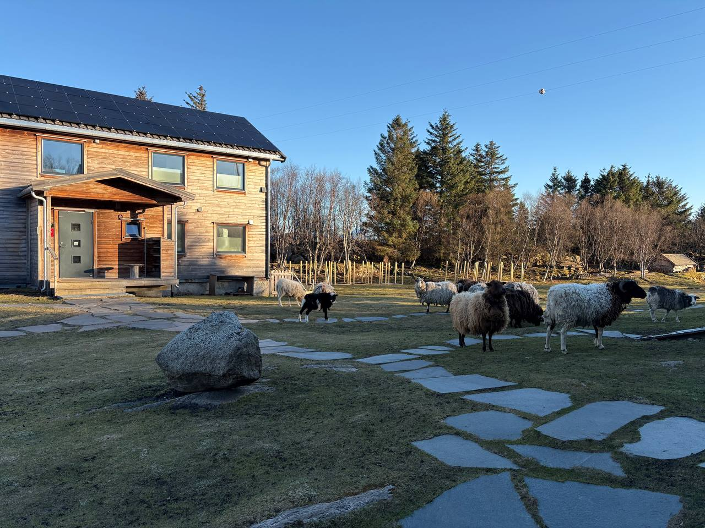
Pět ovcí, beran vepředu. Schůdky v ruce, naštěstí.
Beran je podle Darka agresivní. Vaklaf naštěstí nese metrové hliníkové schůdky — bránítko, které funguje na 95 % savců. Beran pohledem situaci zhodnotí a uhne.
Poledne — průmyslovka v praxi
Ve dvanáct začnou s Darkem dělat světla. Není to první vytáhnutí starého skillu. Vaklaf a Daro spolu chodili na havířovskou průmyslovku elektrotechnickou. Dnes po pětadvaceti letech stojí na štaflích pod střechou za polárním kruhem a tahají kabel.
Vaklaf měl průmku rád. Naučil se tam základy, které pak používá dál — elektrika je u něj part-time povolání, ne vzpomínka. Co je tady jiné, je země a kabel.
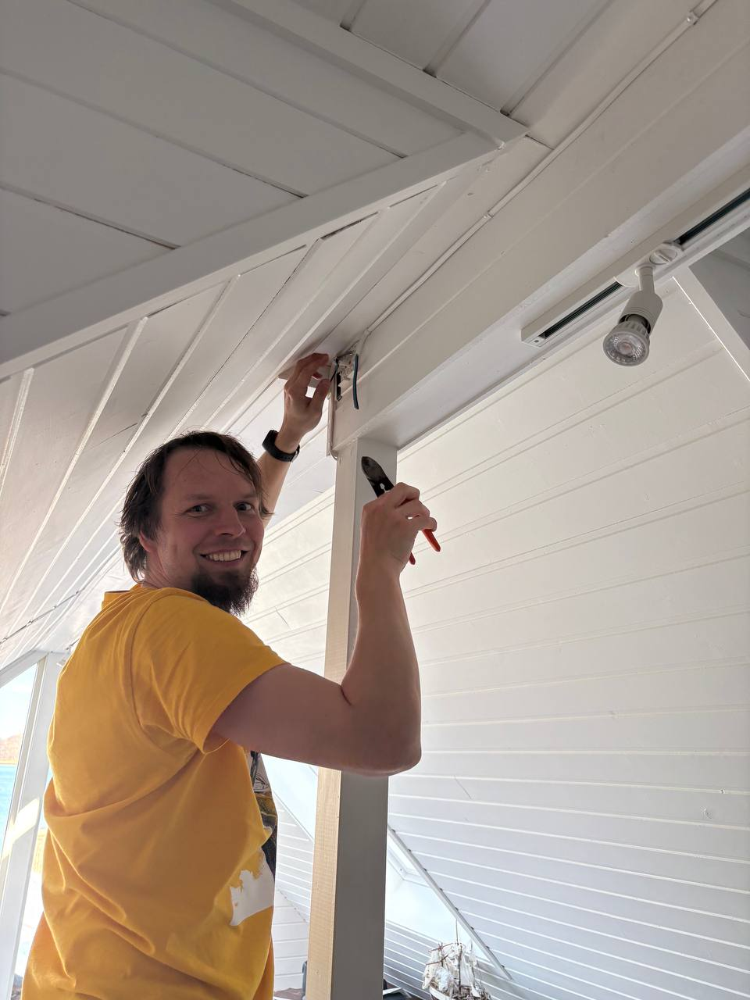
Štípačky, kabel, štafle. Známá pozice, neznámý strop.
Kabel je bílý, hladký, plášť svlékne jedním tahem. Pod ním papír. Pod papírem tři vodiče: hnědý, modrý, a třetí — holý. Měď bez izolace. Vaklaf chvíli mlčí. Norsko se rozhodlo, že zelenožlutá není nutná.
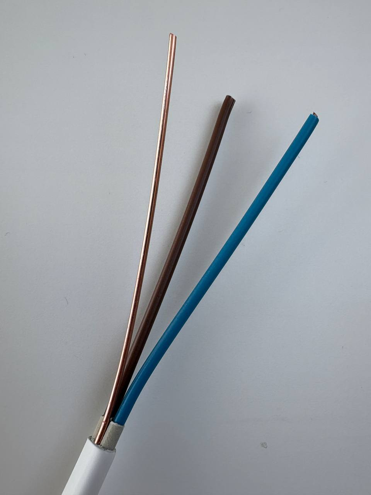
PFXP. Hnědá, modrá, holá měď. Žádná zelenožlutá.
Norský IT systém
230 V mezi fázemi, žádný uzemněný střed. „Modrý“ tady není nulák, je to L2. Jediná zem je ten holý drát + RCD na rozváděči, a Norové se na to spoléhají s naprostou samozřejmostí, jako by elektřina měla vlastní morálku.
Odpoledne — strop je křivý
Dvanáct spotů. Lišty. A jeden požadavek, který zní triviálně, dokud se ho nepokusíš dodržet: má to být rovně. Majitel chce rovně.
Strop ale rovný není. Strop je z prken, prkna jsou stará, a dům si na to za pár desetiletí vybudoval názor, který nemá v plánu měnit. Hliníková lišta naproti tomu na žádný kompromis přistoupit neumí.
Vaklaf a Daro tedy stráví celé odpoledne tím, že zápasí s geometrií. Měřit, podložit, vodováhou zkontrolovat, mechanicky donutit lištu, aby z pohledu hosta na podlaze vypadala rovně, i když ze stropu má vlnky jak prkno samo. Tohle není elektrikařina. Tohle je tichá diplomacie mezi tím, co majitel chce, a tím, co dům dovolí.
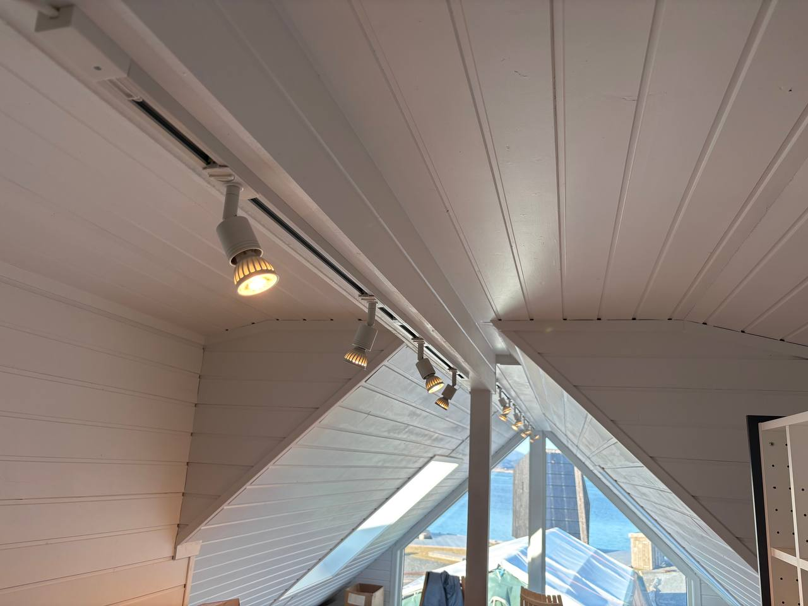
V pět odpoledne svítí dvanáct spotů. Rovně. Z pohledu hosta. Z pohledu stropu trochu naopak, ale strop si bude muset zvyknout.
Večer — kuchyně na volnoběh
Hosté se sjíždějí. Kuchaři přijeli včera v noci, takže o ně bude pečováno michelinsky.
A tak si Vaklaf s Darem dělají večeři jen pro sebe. Tresky ze včerejška dostávají druhou šanci. Plech amerických brambor, sůl, máslo, pánev. Dva chlapi, dvě porce, žádné menu.
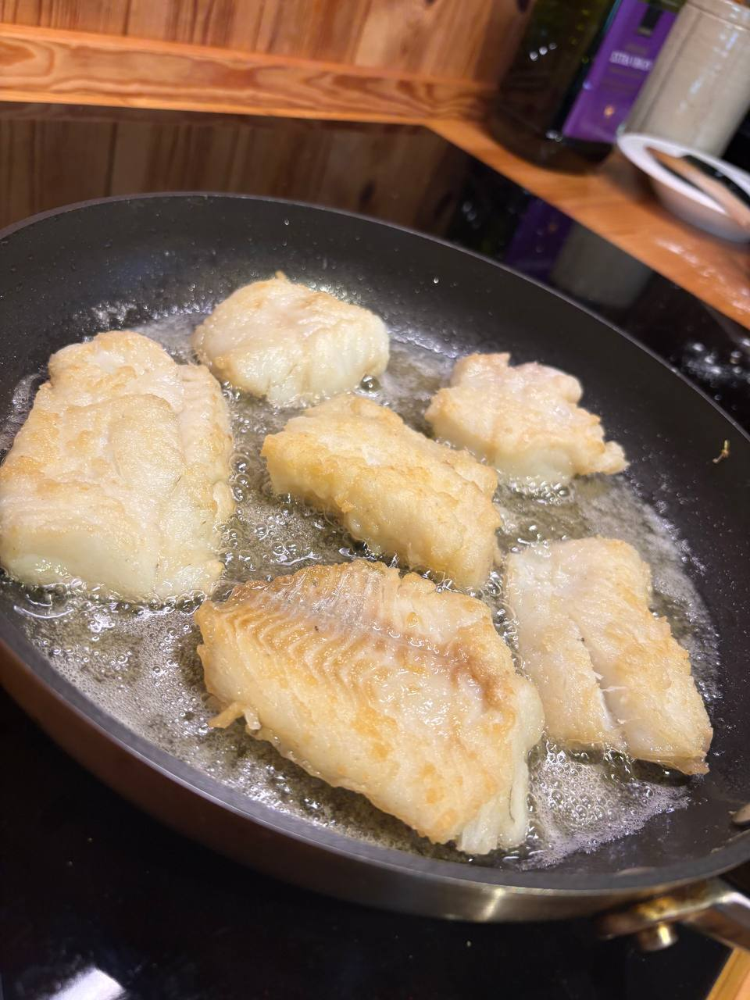
Treska, kolo druhé. Včera ulovená, dneska na pánvi.
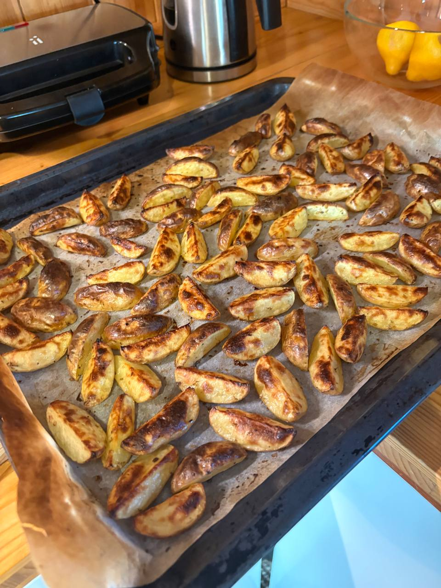
Plech amerických brambor. Norsko se na hosta dívá jako na zvíře, které musíš krmit, dokud nepřestane jíst.
Vaklaf si na chvilku uvědomí, že rybu, kterou ulovil včera odpoledne, dneska jí jen on a jeho kámoš. Lov a večeře v jedné rovině, bez restaurace, bez prkna, bez čekání. Den, ve kterém všechny řemesla skončila tam, kde měla.
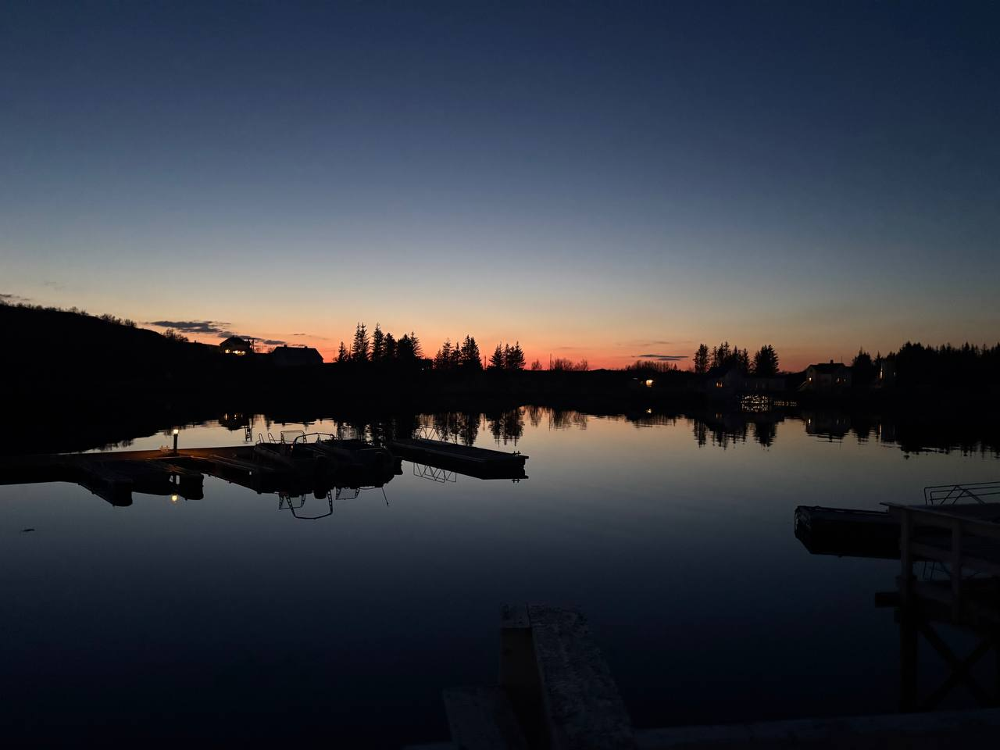
Před spaním. Půl jedenácté večer, slunce za obzorem na chvíli, hned zase poleze nahoru.
Cestou do ohořelé boudy láká rozpálená sauna. Dneska už to ale Vaklaf nedá. Zítra je taky den.
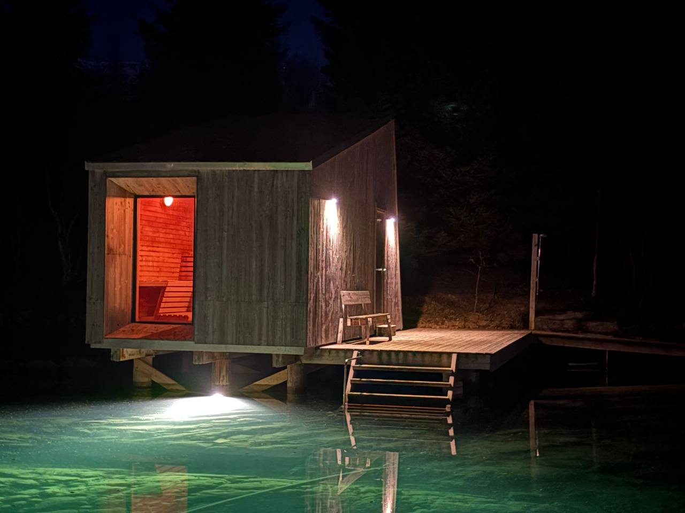
Sauna nad mořem. Uvnitř 90 °C, pod schůdky voda, která za tři vteřiny přesvědčí, že jste udělali v životě špatný krok. A přesně proto tam lezete.
Tresky dojezené. Plech vystudený. Den, který začal v deset, končí pomalu.
Druhé ráno
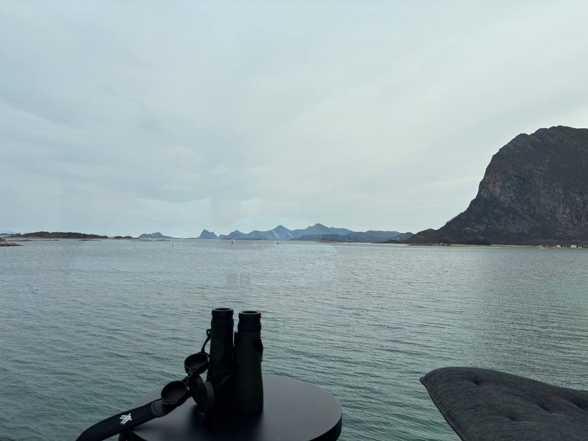
Šedá místo azurové. Vaklaf kouká dalekohledem na ptáky nad kopcema.
Úterý
Darek jel ráno do Steigen Kryss na autobus pro Marii. Vaklaf zevlil. Seděl na molu, koukal na fjord. Letěl tři tisíce kilometrů, aby seděl a koukal, jak po vodě plave nic. Šel si ohřát kafe. Na zpáteční cestě se ještě jednou zastavil a koukal. Pro jistotu.
Kolem poledne se vrátili a vrhli se s Darkem do práce. Sporák. Zásuvka. Tři lustry. Vaklaf je elektrikář na part-time. Darek taky. Dva chlapi se přepravili tisíce kilometrů, aby spolu zapojili zásuvku. Z dovolené se stala kolegiální brigáda.
Odpoledne logistika. Tady se nenakupuje. Kamion přijede na pevninu do Nordskotu, místní si pro něj zajedou hliníkovou loďkou a navozí to do skladu. „Zásoby na další tejden“ zní úplně jinak, když Vaklaf stojí u kamionu, který jel kvůli deseti lidem, co odsud do tejdne nikam neutečou.
Večer s Marií a Darkem byl super. Vaklaf neuměl říct proč. Asi proto, že nejlepší večery jsou ty, ze kterých si druhý den nepamatuješ žádnou velkou pravdu.
Středa — ráno v ohořelé boudě
Vaklaf se ráno probudí v ohořelé boudě a začne ji rozkreslovat do laptopu. Reverse-engineering: vzít existující stavbu a namodelovat ji do 3D, jako kdyby ji nikdo nepostavil. Postel, výhled na fjord, na klíně laptop, vedle kniha „Scandinavian Architects“. Home office, na který by se v Praze tvrdě spořilo jen na ten výhled.
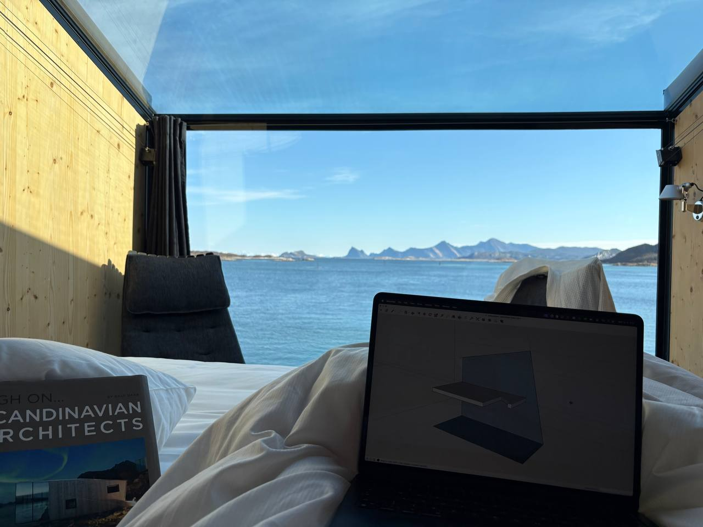
Pracovna na ostrově. Postel, kniha, laptop, fjord. Žádná z těch věcí netuší, že je v práci.
Pak popravky snídaně. Vaklaf dojídá to, co po včerejším bufetu zbylo. V kuchyni se nesmí začínat nic nového, dokud nemizí to staré. Vaklaf je v této činnosti přirozený talent.
Pak zase elektrika — zásuvky ve skladu. V tom samém skladu, kam se včera navozily zásoby z kamionu. Sklad teď bude mít i proud. Vaklaf začíná mít pocit, že na ostrově není místo, kde by neměl něco zapojit.
Středa odpoledne — připluli Brothers
Odpoledne připluje hliníkový shuttle. Na palubě Maro a Jumper. Brothers — kámoši, které Vaklaf zná pětadvacet let. Jumper je k tomu Darkův skutečný brácha. Čtyři chlapi, jeden ostrov, večer, který nebude potřebovat popis. Začíná pořádná oslava.
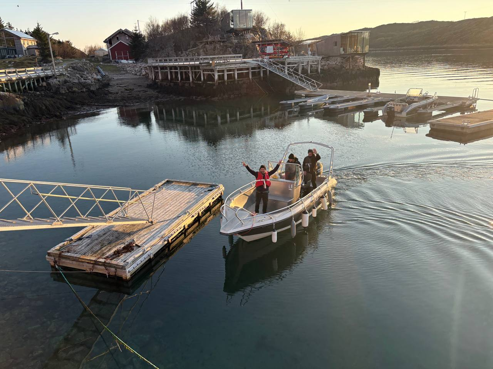
Hliníkový shuttle u mola, jeden z bráchů mává na dron. Dvacet pět let kámošství dorazilo lodí.